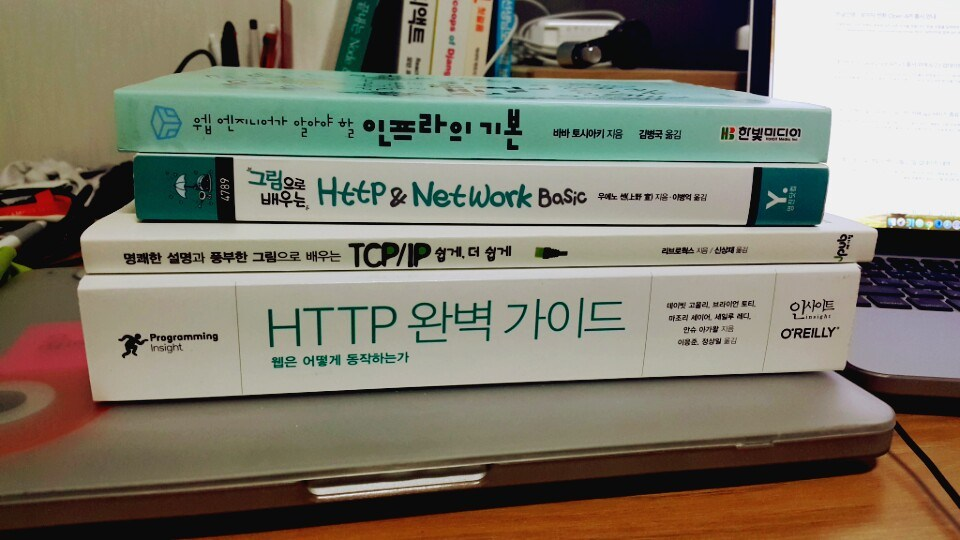

<!DOCTYPE html>
<html lang="ko">

<!-- Head tag -->
<head>

    <meta charset="utf-8"/>
    <meta http-equiv="X-UA-Compatible" content="IE=edge"/>
    <meta name="viewport" content="width=device-width, initial-scale=1"/>
    <meta name="theme-color" content="#000"/>

    <!-- for NAVER search index -->
    <meta name="naver-site-verification" content="08d0b9b1265a02d27eb8c25208f88e86d1681974" />
    <!-- for Google Search Console -->
    <meta name="google-site-verification" content="T73c2s_bs7sgnZsES1d9GN7taHGu6BhjE_Q_8EtUwtE" />
    
    <!--Description-->

    


     


        
        <meta name="description" content="나는 어떤 개발자가 될 것인가? | "/>
    

    <meta name="keywords" content="html, css, javascript, frontend, backend, web developer, ui developer, server developer, reactjs, vuejs, redux, mobx, css in js, nodejs, postgresql, mysql, mariadb, mongodb, nosql, graphql, typescript, es6, ecma, ecma script">

    <!--Author-->
    
        <meta name="author" content="Jang Jae Won"/>
    

    <!--Open Graph Title-->
    
        <meta property="og:title" content="괜찮은 웹 프론트 개발자"/>
    

    <!--Open Graph Description-->
        
        <meta name="og:description" content="나는 어떤 개발자가 될 것인가? | "/>
    

    <!--Open Graph Site Name-->
        <meta property="og:site_name" content="웹 개발자 기술 블로그"/>

    <!--Type page-->
    
        <meta property="og:type" content="article"/>
    

    <!--Page Cover-->
    
    
        <meta property="og:image" content="http://cresumerjang.github.io/img/author.jpg"/>
    

        <meta name="twitter:card" content="summary_large_image"/>

    

    
        <meta name="twitter:image" content="http://cresumerjang.github.io/img/author.jpg"/>
    

    <!-- Title -->
    

    
        <title>괜찮은 웹 프론트 개발자</title>
    
    
    <!-- Web Font -->
    <link href="https://fonts.googleapis.com/css?family=Noto+Sans+KR:100,300,400|Roboto:100" rel="stylesheet">

    <!-- Bootstrap Core CSS -->
    <link href="//maxcdn.bootstrapcdn.com/bootstrap/3.3.6/css/bootstrap.min.css" rel="stylesheet"/>

    <!-- Custom CSS -->
    
<link rel="stylesheet" href="/css/style.css">


    <!-- Custom Fonts -->
    <link href="//maxcdn.bootstrapcdn.com/font-awesome/4.6.3/css/font-awesome.min.css" rel="stylesheet" type="text/css"/>
    <link href="//fonts.googleapis.com/css?family=Lora:400,700,400italic,700italic" rel="stylesheet" type="text/css"/>
    <link href="//fonts.googleapis.com/css?family=Open+Sans:300italic,400italic,600italic,700italic,800italic,400,300,600,700,800" rel="stylesheet" type="text/css"/>

    <!-- HTML5 Shim and Respond.js IE8 support of HTML5 elements and media queries -->
    <!-- WARNING: Respond.js doesn't work if you view the page via file:// -->
    <!--[if lt IE 9]>
    <script src="//oss.maxcdn.com/libs/html5shiv/3.7.0/html5shiv.js"></script>
    <script src="//oss.maxcdn.com/libs/respond.js/1.4.2/respond.min.js"></script>
    <![endif]-->

    <!-- Gallery -->
    <link href="//cdnjs.cloudflare.com/ajax/libs/featherlight/1.3.5/featherlight.min.css" type="text/css" rel="stylesheet"/>

    <!-- Google Adsense -->
    <script async src="https://pagead2.googlesyndication.com/pagead/js/adsbygoogle.js"></script>
<script>
     (adsbygoogle = window.adsbygoogle || []).push({
          google_ad_client: "ca-pub-3917275028032933",
          enable_page_level_ads: true
     });
</script>

    <!-- Google Analytics -->
    
    <script>
        (function(i,s,o,g,r,a,m){i['GoogleAnalyticsObject']=r;i[r]=i[r]||function(){
                    (i[r].q=i[r].q||[]).push(arguments)},i[r].l=1*new Date();a=s.createElement(o),
                m=s.getElementsByTagName(o)[0];a.async=1;a.src=g;m.parentNode.insertBefore(a,m)
        })(window,document,'script','//www.google-analytics.com/analytics.js','ga');

        ga('create', 'UA-132451532-1', 'auto');
        ga('send', 'pageview');

    </script>


    <!-- favicon -->
    
    <link rel="icon" href="/favicon.ico"/>
    
<meta name="generator" content="Hexo 5.4.2"></head>


<body>

    <!-- Menu -->
    <!-- Navigation -->
<nav class="navbar navbar-default navbar-custom navbar-fixed-top">
    <div class="container-fluid">
        <!-- Brand and toggle get grouped for better mobile display -->
        <div class="navbar-header page-scroll">
            <button type="button" class="navbar-toggle" data-toggle="collapse" data-target="#bs-example-navbar-collapse-1">
                <span class="sr-only">Toggle navigation</span>
                <span class="icon-bar"></span>
                <span class="icon-bar"></span>
                <span class="icon-bar"></span>
            </button>
            <a class="navbar-brand" href="/">cresumerjang.github.io</a>
        </div>

        <!-- Collect the nav links, forms, and other content for toggling -->
        <div class="collapse navbar-collapse" id="bs-example-navbar-collapse-1">
            <ul class="nav navbar-nav navbar-right">
                
                    <li>
                        <a href="/">
                            
                                Home
                            
                        </a>
                    </li>
                
                    <li>
                        <a href="/archives">
                            
                                Archives
                            
                        </a>
                    </li>
                
                    <li>
                        <a href="/tags">
                            
                                Tags
                            
                        </a>
                    </li>
                
                    <li>
                        <a href="/categories">
                            
                                Categories
                            
                        </a>
                    </li>
                

                
                    <li>
                        <div id="site_search">
                            <div class="form-group">
                                <input type="text" id="local-search-input" name="q" results="0" autocomplete="off" placeholder="search" class="st-search-input st-default-search-input form-control"/>
                            </div>  
                            <div id="local-search-result"></div>
                        </div>
                    </li>
                
            </ul>
        </div>
        <!-- /.navbar-collapse -->
    </div>
    <!-- /.container -->
</nav>

    <!-- Main Content -->
    <!-- Page Header -->
<!-- Set your background image for this header in your post front-matter: cover -->

<header class="intro-header" style="background-image: url('/img/hexo_main-bg.jpg')">
    <div class="page-main">
        <div class="container">
            <div class="row">
                <div class="col-lg-8 col-lg-offset-2 col-md-10 col-md-offset-1">
                    <div class="post-heading">
                        <h1>괜찮은 웹 프론트 개발자</h1>
                        
                        <h2 class="post-subheading">
                            나는 어떤 개발자가 될 것인가?
                        </h2>
                        
                        <span class="meta">
                            <!-- Date and Author -->
                            
                            
                                2019-05-10
                            
                        </span>
                    </div>
                </div>
            </div>
        </div>
    </div>
</header>

<!-- Post Content -->
<article>
    <div class="container">
        <div class="row">

            <!-- Tags and categories -->
            
                <div class="post-tag-category-box">
                    <div class="col-lg-4 col-lg-offset-2 col-md-5 col-md-offset-1 post-categories">
                        
                    </div>
            
                    <div class="col-lg-4 col-md-5 post-tags">
                        
                            

<a class="text--article-category icon category-daily" href="/categories/daily/">daily</a>

                        
                    </div>
                </div>
             

            <!-- Gallery -->
            

            <!-- Post Main Content -->
            <div class="col-lg-8 col-lg-offset-2 col-md-10 col-md-offset-1">
                <blockquote>
<p>해당 포스트는 매우 주관적인 의견임을 말씀드립니다.<br>
저와 같은 커리어를 가시는 프론트 개발자 분들께 조금이나마 도움이 될 수 있기를 바랍니다.</p>
</blockquote>
<p>프론트 개발자로 일하면서 프론트 개발자가 서비스에서 차지하는 중요도가 점점 높아짐을 느끼고 있는 요즘 입니다. 퍼블리싱과 백엔드 개발의 모호한 중간 어디쯤 이었던 과도기도 이제는 옛말이 되었고 프론트 개발자로서 갖추어야 할 역량과 요구되는 스펙은 점점 명확해지고 있습니다. (명확하게 점점 더 많아지고 있죠…)</p>
<p>예전에는 퍼블리셔라는 직군이 HTML, CSS를 생산하고 그 이후는 대부분 백엔드 개발자가 작업했습니다. JAVASCRIPT 통한 UI 인터렉션은 회색 영역으로 어떤 회사는 퍼블리셔가, 어떤 회사는 백단 개발자가 처리했었습니다.</p>
<p>하지만 애플리케이션 UI 상태의 복잡도가 점점 증가하면서 MVC, MVP, MVVM 등 디자인 패턴을 지향하는 Backbone, Ember, Angular, React, Vue 등의 프론트 라이브러리, 프레임워크가 등장하였고 백단에서도 MSA등 아키텍쳐의 변화가 생기면서 웹 개발의 패러다임이 빠르게 변화하기 시작한 것 같습니다.</p>
<p>백단에서 처리되던 UI 관련 로직이 프론트로 넘어오고 API 호출을 필요로 하는 UI가 많아지기 시작했습니다. SPA가 뜨기도 했고 SEO 이슈나 초기 UX 개선을 위해 SSR에 대한 요구사항도 생겨났으며 빠르게 변하는 최신 기술과 개발환경 및 자동화 툴 도입을 위한 task runnner, bundler 에 대한 이해도 필요하게 되었습니다.</p>
<p>마크업을 만들고, 디자인을 관리하고 UI 인터렉션만을 처리하던 시절을 지나 이제는 도메인을 이해하고 API 작업자와 협업하며, 화면의 인터렉션을 넘어 복잡한 UI 상태를 효율적으로 관리해야 하는 직군이 되었습니다. 나아가 성능 최적화를 고려하고 자동화와 테스트를 도입하여 서비스를 안정적이고 성공적으로 운용하기 위해 꼭 필요한 직군이 되었습니다.</p>
<p>확실히 이러한 직군에 대한 수요가 점점 늘어나고 있는 걸 체감할 수 있습니다. 하지만 주변에서 자주 듣는 얘기가 있습니다. <strong>“괜찮은 프론트 개발자 없나요?”</strong> 라는 말 입니다.</p>
<p>괜찮은 프론트 개발자를 구하기가 왜 힘든걸까요?</p>
<p>잠깐 과도기와 요즘의 프론트 개발 차이점에 대해서 알아보겠습니다.</p>
<p>아마 과도기에는 퍼블리셔가 프론트 개발을 어느 정도 해내도 서비스에 큰 문제가 없었을 겁니다. 엄밀히 말하면 사실 지금도 큰 문제는 없습니다. 제 경험상 변수를 전역에 남발하든, 코드가 모듈화 되어 있지 않거나 심지어 API 응답에 따른 UI 처리를 setTimeout 같은 비동기 메서드로 어거지로 끼워맞춘 수준의 코드라도 사실상 장애는 쉽게 나지는 않았습니다.</p>
<p>즉, 요즘 인기있는 React를 사용하여 컴포넌트를 만들고 복잡한 UI 상태는 Redux 같은 상태관리 라이브러리에게 위임하고 async, await 를 사용하여 깔끔하게 비동기 처리하고 import, exprot, arrow function, class등 es6 문법이나 typescript 를 사용하지 않더라도, 적절한 디자인 패턴과 예외 처리 같은걸 고민하지 않더라도 서비스는 잘 굴러간다는 얘기입니다.</p>
<p>회사가 애자일하게 돌아간다면 빠르게 기술부채가 쌓이겠지만 사실 그 부채가 터지기까지 아주 오랜 시간이걸린다는 게 문제입니다. 어떻게 보면 기술 부채가 터지긴 전까지는 오히려 큰 고민 없이 요구사항을 더 빠르고 편하게 서비스에 녹일 수 있을지도 모릅니다. 더군다나 회사가 애자일하게 돌아가지 않는다면 서비스가 망하기 전에는 기술부채를 상환하는 날이 오지 않을지도 모르죠.</p>
<p>정작 제대로 된 개발 문화와 좋은 개발자들이 있는 회사에서 프론트 개발자를 뽑으려 보면 지원자가 기대치에 미치지 못하는 많은 이유가 여기에 있다고 생각합니다.</p>
<p>좋은 개발자가 되기 위해서는 개인의 노력과 함께 개발문화, 조직, 환경도 매우 중요합니다. 개발문화, 환경은 결국 구성원들이 만든다고 생각하기 때문에 스스로가 좋은 개발자가 되기 위해 노력하는 것이 중요하다고 생각하지만 슬프게도 이미 굳어버린 조직이라면 더 나은 환경을 찾아 떠나는 것이 좋을지도 모르겠습니다.</p>
<p>내가 속한 환경을 변화시키든 더 좋은 환경을 찾아가든 먼저 스스로가 좋은 프론트 개발자가 되어야 함은 분명합니다. 하지만 과거처럼 퍼블리싱과 조금의 자바스크립트 경험으로는 요즘의 프론트 개발 트렌드를 리드하는 건 고사하고 따라가기도 힘들 겁니다. 중요한 것은 믿을 수 있는 기본기와 빠르게 변화하는 트렌드를 잘 읽고 대응할 수 있는 유연함입니다.</p>
<p>프론트 개발자로 일하면서 많은 동료를 봐왔습니다. 퍼블리셔에서 프론트 개발자로 영역을 넓히신 분, 백엔드 개발만 하다 프론트로 넘어 오신 분, 최근에는 신입 공채로 입사해 첫 커리어를 프론트 개발로 시작하시는 분들까지 많은 프론트 개발자 유형을 보았습니다.</p>
<p>스스로 개발하면서 느끼기도 했지만 다른 환경에서 오신 분들이 일하는 방식을 보면서 느낀점은 확실히 프론트단만 잘 아는 개발자 보다 여러 분야에 대한 이해가 있는 개발자가 더 좋은 코드를 작성한다는 사실 입니다.</p>
<p>어떤 분야에 대한 이해가 필요한지는 처한 환경에 따라 다를 수 있지만 서버 개발자나 DBA, 인프라 담당자, 개발자보다 개발을 잘 할 것 같은 포스를 가진 기획자와 대화하다 보면 자연스럽게 알 수 있습니다. 이슈에 대한 확실한 피드백과 명확한 요구사항을 파악하여 best way를 고민하기 위해서 내가 알고 있어야 하는게 무었인지 말입니다.</p>
<p></p>
<blockquote>
<p>위 책은 제가 아무것도 모르던 시절에 샀던 책들입니다. 네트워크에 대해 학습하고 싶은 프론트 개발자라면 위에서부터 3,2,1,4 순으로 책을 읽어보시길 권합니다.</p>
</blockquote>
<p>제 경우에는 <code>용어, 네트워크, 인프라, 모던 웹 프레임워크, 모델링, SQL</code> 에 대한 필요를 느겼습니다. 프론트 개발을 떠나 웹 개발자라면 네트워크와 인프라에 대한 지식은 필수라고 생각하며, 모던 웹 프레임워크에 대한 이해, SQL, 모델링 및 기타 개발 및 도메인 관련 용어에 대한 이해가 있다면 불필요한 커뮤니케이션 비용을 줄이고 더 나은 코드를 작성하는데 도움이 될 것 입니다.<br>
추가로 도메인과 UX에 대한 이해를 갖추고 프론트 개발자로서도 뛰어난 역량을 가지고 있다면 감히 스스로를 괜찮은 개발자라고 생객해도 되지 않을까요? (자료구조, 알고리즘 과 같이 프론트, 백엔드를 떠나 소프트웨어 엔지니어로서 알아야 하는 내용은 따로 언급하지 않았습니다.)</p>
<p><strong>스스로 프론트 개발자라는 타이틀에 갇히지 않고 웹 서비스를 만드는 웹 개발자라는 마인드로 커리어를 쌓아간다면 분명 더 좋은 프론트 개발자가 될 수 있을 거라고 생각합니다.</strong></p>
<p>아래는 2016년에 비슷한 주제로 이전 블로그에 작성했던 글의 일부 입니다. 정확히는 <strong>‘UI 개발자가 네트워크에 대해 알아야 하는 이유’</strong> 라는 주제 였습니다. 3년전 이지만 여전히 유효한 내용이고 도움이 될 것 같아 해당 포스트에 추가하였습니다.</p>
<blockquote>
<p>UI 개발이 주 업무이지만 경험상 UI 개발자가 서버쪽 코드를 보고 로직을 이해하거나 쿼리, 네트워크에 대한 이해가 있으면 일을 하기가 훨씬 편해지고 커뮤니케이션 비용을 많이 줄일 수 있다는 걸 알았다. 다시 말하면 커뮤니케이션 비용이 줄어 일을 하기가 편해지는 것 같다.<br>
<br/>예를 들어 로컬서버를 띄우고 API 를 호출하여 UI 개발 중이데 API 가 503이 뜨면 에러로그를 보고 원인을 파악하거나 내가 호출한 API 가 이슈인지 다른 API 문제인지 어느정도 판단하여 담당자를 찾아 빠르게 대응할 수 있다. 이건 회사마다 요구되는 역량이나 업무에 따라 다르겠지만 지금은 알아야 좀 더 효율적인 업무를 할 수 있다.<br>
<br/>그리고 앞서 언급한 이유를 떠나서 개인적인 측면에서 학습 동기는 네트워크를 알고 개발하면 UI 개발에 더 재미를 느낄 수 있기 때문이다. (네트워크에만 국한되지는 않는다.) 서비스 사용자가 어떤 이벤트를 발생시키고  내 코드가 데이터를 서버로 보내고 보낼 때 프로토콜은 뭐가 사용됫는지, 헤더,바디에는 어떤 정보가 담겨 가는지, 보안 이슈는 없는지, 요청 데이터가 어떻게 패킷으로 쪼개져 ip, port, mac 어드레스 등의 정보를 가지고 라우터, 스위치, 방화벽을 통해 어떻게 서버 애플리케이션에 도착하고 응답데이터가 어떻게 다시 오는지 그리고 그렇게 도착한 데이터로 UI 를 그리고 그려진 UI 가 사용자에게 좋은 UX 를 제공하여 이를 통한 매출이 발생한다는 것을 알고 UI 개발을 하면 개발이 훨씬 더 재미가 있다.<br>
<br/>이전에는 스스로 비전공자이고(지금은 졸업 후 컴공과로 편입 하였다.) UI 개발자라 내가 하는 업무에만 포커스를 맞추자는 생각이 강했다. 대부분의 업무가 DOM 핸들링이었고 UI 개발만 해도 학습할게 너무 많았기에 마음에 여유가 없었다. 지금도 UI 로직을 잘 짜거나 퍼포먼스가 높은 주니어 개발자라고 생각하진 않지만 이전 보다는 여유가 조금 생겼고 업무상 API 를 호출할 일이 많다보니 자연스럽게 API 개발자와 커뮤니케이션이 잦아지고, 모르는 부분에서 답답함을 많이 느끼게 되었다.<br>
<br/>그래서 책을 보기 시작했는데 역시 쉬운건 없다… 4권중 2권으 읽었는데 보고보니 두권이 다 그림으로 배우는 책들이다. 학습은 최대한 쉽게쉽게가는게 맞는 것 같다ㅋ 남은 책들 중 HTTP 완벽 가이드는 읽을 엄두가 안나고 인프라의 기본은 어느정도 네트워크를 아는 상태에서 지금 다니는 회사 인프라와 비교하면서 읽으면 재밋지 않을까싶다.</p>
</blockquote>
<p>저도 부족한 점이 많지만 좋은 동료가 되기 위해서 그리고 어제보다 더 나은 개발자가 되기위해 노력하는 개발자 중의 한 사람으로서 저와 같은 커리어를 가시는 분들께 조금이나마 도움이 되었길 바랍니다. 궁금한 점이나 의견은 댓글로 남겨주시면 답변 드리겠습니다.</p>
<!-- > 아래는 같은 주제로 2016년에 다른 블로그에 작성했던 포스트입니다. -->
<!-- UI개발이 업무이지만 경험상 UI개발자가 서버쪽 코드를 보고 로직을 이해하거나 쿼리, 네트워크에 대한 이해가 있으면 일을 하기가 훨씬 편해지고 커뮤니케이션 비용을 많이 줄일 수 있다는 걸 알았다. 다시 말하면 커뮤니케이션 비용이 줄어 일을 하기가 편해지는 것 같다. 예를 들어 로컬서버를 띄우고 API를 호출하여 UI개발 중이데 API가 503이 뜨면 에러로그를 보고 원인을 파악하거나 내가 호출한 API가 이슈인지 다른 API문제인지 어느정도 판단하여 담당자를 찾아 빠르게 대응할 수 있다. 이건 회사마다 요구되는 역량이나 업무에 따라 다르겠지만 지금은 알아야 좀 더 효율적인 업무를 할 수 있다. 그리고 앞서 언급한 이유를 떠나서 개인적인 측면에서 학습 동기는 네트워크를 알고 개발하면 UI개발에 더 재미를 느낄 수 있기 때문이다. (네트워크에만 국한되지는 않는다.) 서비스 사용자가 어떤 이벤트를 발생시키고  내 코드가 데이터를 서버로 보내고 보낼 때 프로토콜은 뭐가 사용됫는지, 헤더,바디에는 어떤 정보가 담겨 가는지, 보안 이슈는 없는지, 요청 데이터가 어떻게 패킷으로 쪼개져 ip, port, mac 어드레스 등의 정보를 가지고 라우터, 스위치, 방화벽을 통해 어떻게 서버 애플리케이션에 도착하고 응답데이터가 어떻게 다시 오는지 그리고 그렇게 도착한 데이터로 UI를 그리고 그려진 UI가 사용자에게 좋은 UX를 제공하여 이를 통한 매출이 발생한다는 것을 알고 UI개발을 하면 개발이 훨씬 더 재미가 있다. -->
<!-- 이전에는 스스로 비전공자이고(지금은 졸업 후 컴공과로 편입 하였다.) UI개발자라 내가 하는 업무에만 포커스를 맞추자는 생각이 강했다. 대부분의 업무가 DOM컨틀이었고 UI개발만해도 학습할게 너무 많았기에 마음에 여유가 없었다. 지금도 UI로직을 잘 짜거나 퍼포먼스가 높은 주니어 개발자라고 생각하진 않지만 이전 보다는 여유가 조금 생겼고 업무상 API를 호출할 일이 많다보니 자연스럽게 API개발자와 커뮤니케이션이 잦아지고, 모르는 부분에서 답답함을 많이 느끼게 되었다. 그래서 책을 보기 시작했는데 역시 쉬운건 없다.. 4권중 2권으 읽었는데 보고보니 두권이 다 그림으로 배우는 책들이다. 학습은 최대한 쉽게쉽게가는게 맞는 것 같다ㅋ 남은 책들 중 HTTP완변 가이드는 읽을 엄두가 안나고 인프라의 기본은 어느정도 네트워크를 아는 상태에서 지금 다니는 회사 인프라와 비교하면서 읽으면 재밋지 않을까싶다. -->
<!-- 네트워크에 관심이 있는 일반인이나 주니어 개발자에게  “TCP/IP 쉽게, 더 쉽게” 책을 추천한다. 내용 정리가 너무 잘 되어 있고 그림이 많아 이해하기 편하다.(학습하는 입장에서 누군가가 좋은 책을 추천해주면 너무 고마웠어서 추천합니다. 책과는 아무런 관련없는 사람입니다.) -->
<!-- 앞서 읽은 두권을 다시 봐야할 것 같아서 남은 2권을 언제즘 읽어볼 수 있을지는 모르겠다…ㅋ -->


                
            </div>

            <div class="google-ad-container">
                <script async src="https://pagead2.googlesyndication.com/pagead/js/adsbygoogle.js"></script>
                <!-- adForPostDisplay -->
                <ins class="adsbygoogle"
                    style="display:block"
                    data-ad-client="ca-pub-3917275028032933"
                    data-ad-slot="6434864533"
                    data-ad-format="auto"
                    data-full-width-responsive="true"></ins>
                <script>
                    (adsbygoogle = window.adsbygoogle || []).push({});
                </script>
            </div>
            <!-- Google Adsense Module -->

            <!-- Comments -->
            
                <div class="col-lg-8 col-lg-offset-2 col-md-10 col-md-offset-1">
                    
    <hr />
    <!--<h3>코멘트:</h3>-->
    <div id="disqus_thread">
        <noscript>Please enable JavaScript to view the <a target="_blank" rel="noopener" href="//disqus.com/?ref_noscript">comments powered by Disqus.</a></noscript>
    </div>


                </div>
            
        </div>
    </div>
</article>

    <!-- Footer -->
    <hr />

<!-- Footer -->
<footer>
    <div class="container">
        <div class="row">
            <div class="col-lg-8 col-lg-offset-2 col-md-10 col-md-offset-1">
                <ul class="list-inline text-center">
                    
                        <li>
                            <a href="https://twitter.com/cresumerjang" target="_blank">
                                <span class="fa-stack fa-lg">
                                    <i class="fa fa-circle fa-stack-2x"></i>
                                    <i class="fa fa-twitter fa-stack-1x fa-inverse"></i>
                                </span>
                            </a>
                        </li>
                    

                    

                    
                        <li>
                            <a href="https://github.com/cresumerjang" target="_blank">
                                <span class="fa-stack fa-lg">
                                    <i class="fa fa-circle fa-stack-2x"></i>
                                    <i class="fa fa-github fa-stack-1x fa-inverse"></i>
                                </span>
                            </a>
                        </li>
                    

                    
                        <li>
                            <a href="https://www.linkedin.com/in/jaewon-jang-104836113/" target="_blank">
                                <span class="fa-stack fa-lg">
                                    <i class="fa fa-circle fa-stack-2x"></i>
                                    <i class="fa fa-linkedin fa-stack-1x fa-inverse"></i>
                                </span>
                            </a>
                        </li>
                    

                    
                        <li>
                            <a href="mailto:jw9651@naver.com" target="_blank">
                                <span class="fa-stack fa-lg">
                                    <i class="fa fa-circle fa-stack-2x"></i>
                                    <i class="fa fa-envelope-o fa-stack-1x fa-inverse"></i>
                                </span>
                            </a>
                        </li>
                    

                    
                </ul>
                <p class="copyright text-muted">&copy; 2022 Jang Jae Won<br></p>
                <p class="copyright text-muted">Original Theme <a target="_blank" href="http://startbootstrap.com/template-overviews/clean-blog/">Clean Blog</a> from <a href="http://startbootstrap.com/" target="_blank">Start Bootstrap</a></p>
                <p class="copyright text-muted">Adapted for <a target="_blank" href="https://hexo.io/">Hexo</a> by <a href="http://www.codeblocq.com/" target="_blank">Jonathan Klughertz</a></p>
            </div>
        </div>
    </div>

    <a href="#" class="button__top">TOP</a>
</footer>


    <!-- After footer scripts -->
    
<!-- jQuery -->
<script src="//code.jquery.com/jquery-2.1.4.min.js"></script>

<!-- Bootstrap -->
<script src="//maxcdn.bootstrapcdn.com/bootstrap/3.3.6/js/bootstrap.min.js"></script>

<!-- Gallery -->
<script src="//cdnjs.cloudflare.com/ajax/libs/featherlight/1.3.5/featherlight.min.js" type="text/javascript" charset="utf-8"></script>

<!-- Search -->

    <script src="/js/search.js"></script>
    <script type="text/javascript">      
        var search_path = "search.xml";
        if (search_path.length == 0) {
            search_path = "search.xml";
        }
        var path = "/" + search_path;
        searchFunc(path, 'local-search-input', 'local-search-result');
    </script>


<!-- Disqus Comments -->

<script type="text/javascript">
    var disqus_shortname = 'cresumerjang-github-io';

    (function(){
        var dsq = document.createElement('script');
        dsq.type = 'text/javascript';
        dsq.async = true;
        dsq.src = '//' + disqus_shortname + '.disqus.com/embed.js';
        (document.getElementsByTagName('head')[0] || document.getElementsByTagName('body')[0]).appendChild(dsq);
    }());
</script>


</body>

</html>